ガラスの雪だるま体験制作、未だできます！
Let's Make Glass Snowman and Christmas tree !
12月31日（火）まで体験が可能です。
9：00～15：00の間でご都合のよい時間をご予約ください。
制作時間：1つ30分 体験料:1つ4000円
☆体験は要予約となっております☆
Facebookメッセージ、お電話、InstagramDMから、日にちと時間（人数）のご予約をお願いいたします。
詳細はガラス工房マルさんのサイト をご覧ください。
をご覧ください。
ガラス工房マルさんについては、 recommendをご覧ください。
One’s Wayにオールディズバンドがやってくるが終了しました！
先週末「One’s Wayにオールディズバンドがやってくる」が無事終了しました。
知人がリードギターを務めるバンド。普段のバンド名「クラッカーズ」を「パインツリーフィールド」に改めての演奏に楽しいひと時を過ごせました。曲の合間でのなぞなぞクイズでは正解者にプレゼントもあり、晩秋の庭を背景に盛況のうちに終えることができました。
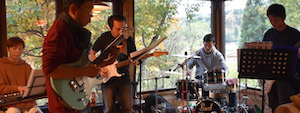
お越しいただいたみなさまありがとうございました。
One’s Way にオールディズバンドがやってくる！
”One’s Way”でオールディズバンドのライブを開催します。
bue-dueの家具に囲まれた室内で紅葉の庭をバックに音楽を楽しんでいただけます。
日時：11月17日（日）開場 15:00 開演 15:30
会費：500円（未就学児無料）
地元で活躍中のクラッカーズの演奏をお楽しみください！
お越しをお持ちしています！
One’s Way については、 aboutをご覧ください。
ガラス工房○マルさんの秋の期間限定吹きガラス体験今年も開催！
【ガラスのカボチャ体験制作ーLet's Make Glass Pumpkins !!ー】
2019年9月20（金）～10月30（水）
9：00～15：00の間で必要時間を要ご予約
制作時間：1つ20分
ハロウィーンにむけてのガラスのカボチャオブジェの制作体験です。
世界に一つのカボチャが作れますよ！
詳しくは
こちら をご覧ください。
をご覧ください。
ガラス工房○マルさんについては、 recommendをご覧ください。
One’s Wayの新企画「氷やさん」Open！
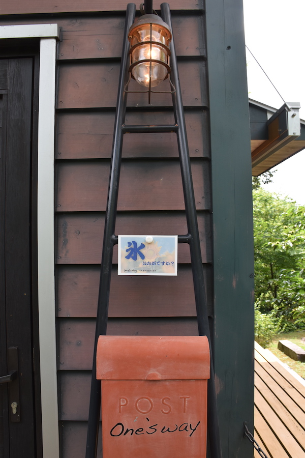
期日：8月12日（月）・13日（火）・14日（水）
10:00〜12:00 & 13:00〜15:00
************************************
MENU
しぐれ
しぐれ金時
抹茶
抹茶金時
************************************
ふらりとお立ち寄りくださいませ。
One’s Wayの新企画「氷やさん」のご案内！
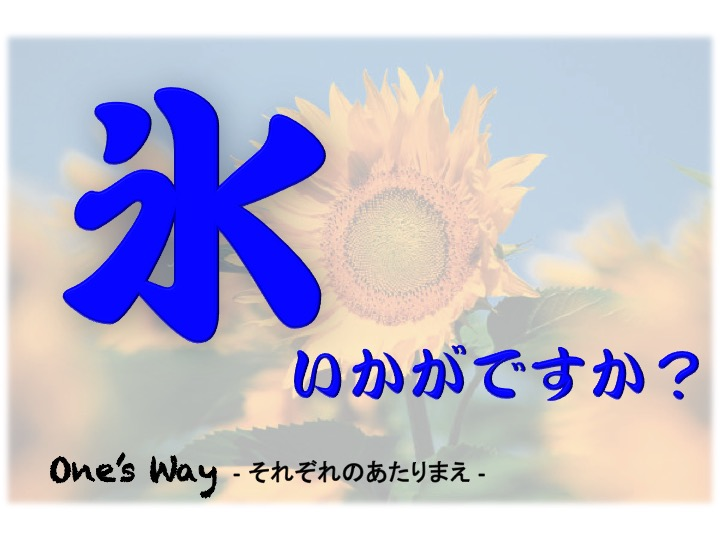
One’s Way - それぞれのあたりまえ - では新企画「氷やさん」を計画中です。
夏の暑さをOne’s Wayのかき氷で癒しませんか？
期日は未定。気ままに開催したいと思います。
このサイト、もしくはOne’s Wayのブログでお知らせしますが、こっそりと開催するかもしれません。
目印は、門扉の「氷いかがですか？」カードです。
お越しになる前に私たちのお気に入り、かつこの企画のインスピレーションを得た作品映画「めがね」 をご覧いただけるとより楽しめるかもしれません。
をご覧いただけるとより楽しめるかもしれません。
ご質問、お問い合わせはこちらのフォームをご利用ください。
ビエンナーレ TOYAMA 2019開催中_本郷仁さんの作品をご覧になれます！
富岩運河環水公園・富山県美術館1階TADギャラリーを舞台に
「ビエンナーレ TOYAMA 2019」が開催されています。
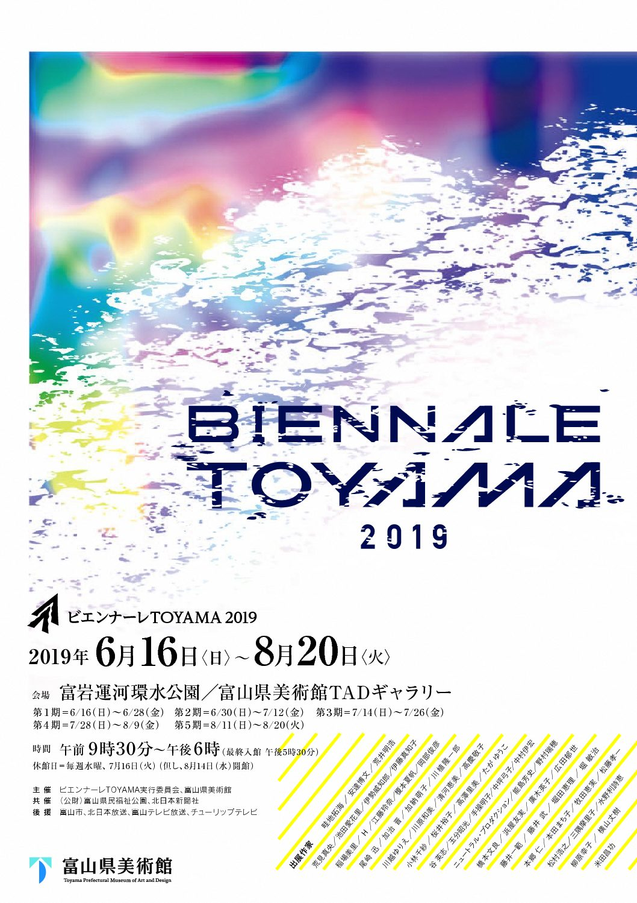
51名の作家さんの作品が５期に分けて展示されます。本郷仁さんの作品は環水公園エリアにて全期に渡って観ていただけます。
詳しくは"富山県美術館"のサイト でご確認ください。
でご確認ください。
会期：2019.6.16（日）ー8.20（火）9:30-18:00 水曜日休館
本郷仁さんについては、 recommendをご覧ください。
One’s Wayの Open House & Gardenが終了しました！
GWの終わりに開催したOne’s Wayの Open House & Gardenが無事終了しました。
1年半ぶりとなるイベントでした。初夏の心地よい風を感じられる天気に恵まれ、盛況のうちに終えることができました。
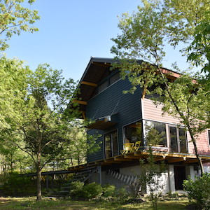
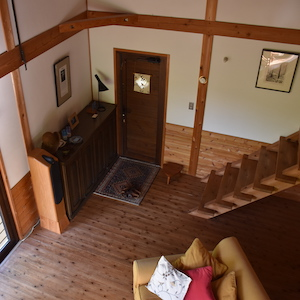
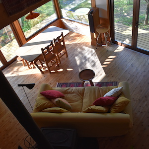
お越しいただいたみなさまありがとうございました。
One’s Way イベントに向けて準備中！
「One’s Way の Open House & Garden」まであと１週間となりました。
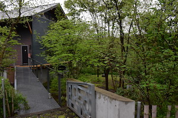
芽吹きの季節に、One’s Wayの庭は緑のグラデーション。
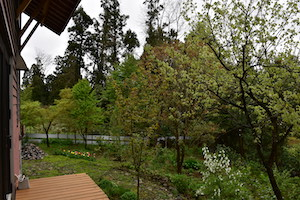
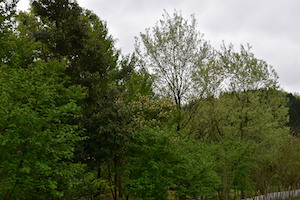
みなさまのお越しをお待ちしております。
詳細はeventをご確認ください。
One’s Way イベントの再開決定！
”One’s Way”の家と庭を開放します。
bue-dueの家具に囲まれた室内、新緑の庭で自家製ケーキとお飲み物を楽しんでいただけます。
日時：５月４日（土）13:00〜18:00
５日（日）10:00〜18:00
６日（月）10:00〜13:00
会費：大人500円 小人200円（未就学児無料）
里山でのタラノメ、ワラビ、ウド、庭でのカモミール等の収穫体験を計画中です。
お越しをお持ちしています！
One’s Way については、 aboutをご覧ください。
ガラス工房○マルさんの記事が『西navi』3月号に掲載されました！
JR西日本情報誌『西navi』3月号に「岩国れんこん硝子」の箸置きと○マルさんご夫妻が載っています。
One’s Wayを本年もよろしくお願いいたします。
あけましておめでとうございます。
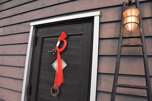
今年は進化したOne’s Wayをご覧いただける機会を設けたいと思っています。
みなさまとお会いできること楽しみにしています。